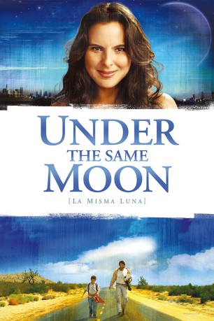
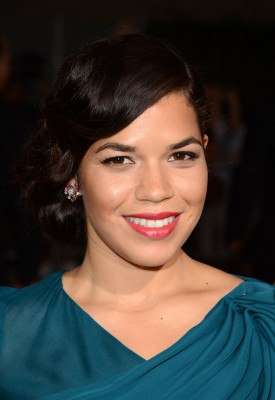

#11516 La misma Luna - Wenn der Mond scheint, denke an mich
Alternativ: Under the Same Moon (Englischer Titel)
 
 IMDB-Wertung: 7.3 / 10
IMDB-Wertung: 7.3 / 10  Metascore: 59
Metascore: 59 
UNDER THE SAME MOON (LA MISMA LUNA) tells the parallel stories of nine-year-old Carlitos and his mother, Rosario. In the hopes of providing a better life for her son, Rosario works illegally in the U.S. while her mother cares for Carlitos back in Mexico. Unexpected circumstances drive both Rosario and Carlitos to embark on their own journeys in a desperate attempt to reunite. Along the way, mother and son face challenges and obstacles but never lose hope that they will one day be together again.
Jahr: 2007
Dauer: 50 Minuten
FSK: 12
Land: Mexiko Studio: Senator Home EntertainmentTonspuren:
Untertitel:
Auflösung: SD (640x352) Größe: 699 MB
Genre: Drama, Abenteuer
Regisseur: Patricia Riggen
Drehbuch: Ligiah Villalobos
Soundtrack: Carlo Siliotto
Darsteller:
- Adrian Alonso als Carlos Reyes 'Carlitos'
- Kate del Castillo als Rosario
 Eugenio Derbez als Enrique
Eugenio Derbez als Enrique Maya Zapata als Alicia
Maya Zapata als Alicia- Carmen Salinas als Doña Carmen 'La Coyota'
- Angelina Peláez als Benita Reyes
- Gabriel Porras als Paco
-  America Ferrera als Martha
 Jesse Garcia als David
Jesse Garcia als David- María Rojo als Reyna
- Ignacio Guadalupe als Leonardo Sánchez Nava
- Mario Almada als Padrino
- Ernesto D'Alessio als Oscar Ponce
 Gustavo Sánchez Parra als Manuel
Gustavo Sánchez Parra als Manuel- Jacqueline Voltaire als Sra. Mckenzie
- Sonya Smith als Sra. Snyder
- J. Teddy Garces als Policía L.A. #1
- Lil Steve Niel als Policía L.A. #2
- Hiromi Kamata als Mesera Supermercado
- Boris Kievsky als Taxista Ruso
- Julie Dove als El Paso Bus Station Announcer
- Los Tigres del Norte als Themselves (uncredited)
- Maria Moreno als Border Patrol Announcer (uncredited)
- Bob Saldana als Shifty LA Latino (uncredited)
- Pailo Heitz als Billy
- Isaac Bravo als Chito
- Catalina López als Josefina
- Yvette Mercedes als Agente Patrulla Fronteriza
- Darwyn Roanhorse als Dueño Motel
- Jorge Rojas als Sr. Snyder
 Guillermo Ríos als Guero
Guillermo Ríos als Guero- Gerardo Martínez als Immigrante
- David Norris als Tommy
- Sergio Barragan als Joven Tatuado
- Samuel Loo als Hombre Filipino
- Mauricio Carmona als Indocumentado
- Lourdes Vicente als Esposa Dueño Motel
- Carl Dillard als Agente del Border Patrol #2
- Barbara May als Boletera Autobús
- Eve Muller als Sra. L.A. #1
- Patricia Floresena als Sra. L.A. #2
- Norma Pablo als Mamá Chito
- Irineo Alvarez als Señor Doblado
- Renán Almendariz Coello als Himself
Datei: X:\NEU\La misma Luna - Wenn der Mond scheint, denke an mich (2007, FSK12, 640x352) - CD1.avi seit 22.07.2019
 Es gibt insgesamt 187 Filme in der Gruppe 'NEU'
Es gibt insgesamt 187 Filme in der Gruppe 'NEU'